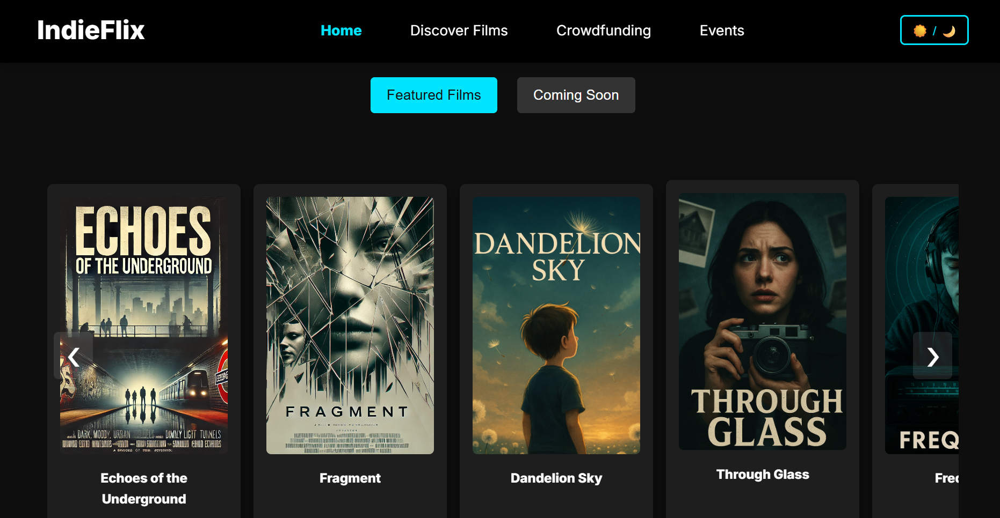

Overview
IndieFlix is a mock responsive website developed as part of my MSc HCI coursework for the Web Design and Development module. The platform simulates a discovery and crowdfunding site for independent films—allowing users to browse indie films, support them via donation flows, and engage with related film events.
While the content was fictional and AI-generated, the project served as a practical testbed for front-end development principles. It demonstrates my ability to design and build a fully functioning multi-page website from scratch, with emphasis on layout, accessibility, responsive design, and dynamic interaction.
Homepage screenshot of the IndieFlix website showing the featured and soon to be released films
Project Goals
- Demonstrate front-end skills: Build a responsive, accessible, multi-page site using HTML, CSS, and JavaScript.
- Simulate real platform behavior: Include carousels, modals, filters, donation tracking, and event subscriptions.
- Design for accessibility: Apply semantic HTML, keyboard navigation, alt text, and color contrast guidelines.
- Create modular UI components: Reuse styled cards, buttons, and forms across different pages.
- Enhance user engagement: Use visual features like hero sections, theme toggles, and interactive feedback states.
My Role
This was an individual project. I was responsible for every stage of the build:
- Information architecture & visual design: Defined layout structure, user flows, and consistent UI components.
- Front-end development: Coded all interactions in vanilla JavaScript and styled the site using CSS Flexbox and media queries.
- Interaction & form design: Developed the donation modal, search filters, subscription form, and dark/light theme toggle.
- Accessibility implementation: Ensured semantic markup, alt attributes, tab order, and focus/hover states.
- Content generation: Created placeholder film/event data using ChatGPT and DALL·E, in line with coursework guidelines.
Methodology
Design-First Approach
The site was designed around a modular, mobile-first system. Components like film cards, carousels, modals, and event blocks were reused across pages with consistent styling. The focus was on clarity, reusability, and scalability.
Development Process
- Used semantic HTML and responsive CSS (Flexbox & media queries)
- Implemented interactive features with vanilla JavaScript (no frameworks)
- Used
localStoragefor non-persistent client-side logic (e.g., donation flows)
Interaction Design
- Built custom features: tab navigation, filters, carousels, countdowns, and modals
- Form validation implemented with clear error messaging
- Light/dark theme toggle with persistence across pages
Accessibility
- Ensured keyboard navigation and logical tab order
- Used appropriate alt text, ARIA roles, and semantic tags
- Maintained WCAG-friendly color contrast in both light and dark themes
Testing
The site was tested throughout development on different devices and screen sizes. Manual checks included layout scaling, tab navigation, form validation, and dynamic element behavior.
Key Features
- Responsive layout with Flexbox and media queries
- Persistent dark/light mode toggle
- Reusable content cards and consistent layout structure
- Interactive homepage carousel with swipe and buttons
- Dynamic filters and live search on Discover Films
- Donation modal with validation and visual progress tracking
- Accessible navigation with skip links and focus states
- Event subscription form with user feedback and validation
Comparison of IndieFlix homepage in dark and light themes.
Dynamic filters and live search allow users to browse films by genre or creator.
Donation modal with real-time validation and visual progress tracking.
Events page displaying upcoming screenings, festivals, and local happenings.
Contact form with validation and feedback to engage IndieFlix supporters.
Findings
Although the site was not tested with external users, self-evaluation and peer feedback revealed several strengths:
- Responsive layout worked well across desktop, tablet, and mobile
- Homepage carousel and tabbed navigation enhanced user engagement
- Filters and search created a seamless SPA-like experience without reloads
- Browser history preserved context when navigating film details
- Modals and forms provided clear feedback for interactions and errors
- Theme toggle improved personalization and worked consistently
- Accessibility features like tab order and alt text were effectively implemented
- Form validation and content remained functional despite static data constraints
Recommendations
Limitations & Improvements
- No backend integration – all data is static or handled via
localStorage - No mobile-specific designs – while layouts scale, tailored mobile UIs would improve ergonomics
- Basic form validation – lacks field-level checks, confirmation steps, or inline hints
- Static film/event data – no CMS or content management functionality
Future Enhancements
- Backend connection with user authentication and database (e.g. Firebase, MongoDB)
- User profiles to save favorites, RSVPs, and donation history
- Advanced filtering and recommendation logic for personalized discovery
- Custom video player with playback controls
- Live event updates and calendar integration with location services (e.g. Google Maps)
- Full accessibility audit to ensure compliance beyond the basics
- Review and commenting system for user engagement
- Smoother transitions and animations for modals, carousels, and page changes
Outcome
Despite being a mock project, IndieFlix demonstrates real-world front-end design and development capabilities. Key outcomes include:
- A fully responsive, multi-page site with a consistent visual identity and modular components
- Implementation of dynamic, client-side functionality including modal forms, filters, and donation progress tracking
- A balance of cinematic visuals (e.g. hero video, dark mode) and usability best practices (e.g. feedback states, accessible markup)
- A working simulation of a platform experience—guiding users from content discovery to support actions in a seamless journey
Though not built for production, the project showcases how I plan, structure, and execute a user-centered digital experience from scratch. It highlights both technical fluency and UX thinking.
Reflection
This project allowed me to blend creativity with technical implementation under an academic brief. Beyond writing code, I had to think like a designer and an end user simultaneously.
What Went Well
- Structured design process: Translated high-level goals into modular components and reusable layouts
- Client-side interaction design: Built responsive UI features—tabs, carousels, modals—without external libraries
- Accessibility focus: Prioritized semantic HTML, skip links, tab navigation, and contrast across themes
- Personalization & UX polish: Persistent theme toggles, visual feedback, and responsive behavior enhanced the experience
Areas to Improve
- Lacked backend integration—user actions were not persistently stored
- No tailored mobile layouts—while responsive, spacing and interactions could be optimized further
- Validation logic was functional but basic—future forms could include inline error states, confirmation steps, and server-side checks
This case study strengthened my front-end development foundation and gave me the confidence to approach more complex interaction patterns in the future. It also reinforced the importance of designing experiences that feel polished even when built for simulation.
Tools Used
- HTML5 / CSS3 / JavaScript (Vanilla): Core tech stack
- Glitch: IDE and live deployment environment
- Flexbox & Media Queries: Responsive design implementation
- localStorage: Simulated donation tracking and user state
- DALL·E / ChatGPT: AI-generated content and media assets
- Browser DevTools & Lighthouse: Manual and automated accessibility/testing checks
- Semantic HTML & ARIA roles: Accessibility support and keyboard navigation